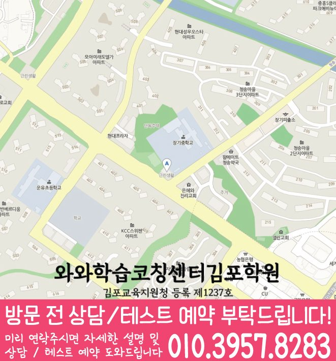

많이 풀기보다, 어떤 단계에서 막히는지(개념 부족/계산 실수/문장 이해)를 확인해 학생에게 맞는 학습 순서를 설계합니다.
LOCAL CHILD GUIDE
장기동 초3 수학학원
경기 김포시 장기동에서 초3 수학을 고민하는 학생을 위해, 와와학습코칭센터는 실력 진단부터 개념 정리, 유형 풀이, 오답 관리까지 이어지는 학습 흐름을 안내합니다. 초3 시기는 연산부터 곱셈·나눗셈, 분수 기초 같은 핵심 개념이 흔들리기 쉬운 시기라서, 학생의 이해도와 풀이…
장기동초3 수학 학습 안내
4.8학부모 후기 평점


LOCAL ACADEMY GUIDE
장기동 초등 3학년 수학학원 와와학습코칭센터 학습 안내
경기 김포시 장기동에서 초3 수학을 고민하는 학생을 위해, 와와학습코칭센터는 실력 진단부터 개념 정리, 유형 풀이, 오답 관리까지 이어지는 학습 흐름을 안내합니다. 초3 시기는 연산부터 곱셈·나눗셈, 분수 기초 같은 핵심 개념이 흔들리기 쉬운 시기라서, 학생의 이해도와 풀이 습관을 함께 점검하고 꾸준히 실력이 쌓이도록 코칭합니다.
장기동 초3 수학 수업의 핵심 포인트
연산과 개념을 탄탄히 하고, 곱셈·나눗셈, 규칙성 등 유형 학습을 오답 원인별로 재정리해 점수를 올릴 수 있게 돕습니다.
수학 실력만이 아니라 국어 독해 습관과 영어 학습 흐름도 함께 점검해, 전과목 학습 태도와 이해력을 균형 있게 키웁니다.
선생님 특징
초3 수학은 같은 유형을 반복해도 실수가 반복될 수 있습니다. 풀이 과정과 계산 습관을 함께 확인하며 다시 연결해 줍니다.
개념을 이해한 뒤 대표 유형 → 응용 유형 순으로 진행해, 문제를 풀 수 있는 근거를 만들고 실력 격차를 줄입니다.
숙제와 복습, 오답 정리를 ‘습관’으로 고정해 수업 시간이 끝난 뒤에도 실력이 유지되도록 관리합니다.
수업 진행방식
1. 현재 수준 확인
초3 학년 진도, 최근 학습 흐름, 단원별 약점 유형을 확인해 수학에서 흔들리는 지점(개념/계산/문제 이해)을 정리합니다.
2. 개념 정리와 유형 학습
단원 핵심 개념을 먼저 정리한 뒤, 같은 실수가 나오지 않도록 대표 유형부터 단계적으로 연습하고 응용까지 확장합니다.
3. 오답 관리와 학습 피드백
틀린 문제를 재풀이하는 데서 끝내지 않고, 왜 틀렸는지(계산/이해/적용) 기준을 세워 다음 풀이에서 달라지게 지도합니다.
학년별 학습 전략
초등(초1~초6)
- 연산 정확도와 개념 이해를 함께 잡아 실수 패턴을 줄입니다.
- 초3 핵심 단원(곱셈·나눗셈, 규칙성 등)을 단계적으로 정복합니다.
- 오답 노트를 활용해 같은 유형 재오답을 예방합니다.
중등
- 내신 대비를 위한 단원별 유형 반복 점검으로 점수 상승을 목표로 합니다.
- 영어·국어 독해 습관과 함께 학습 효율을 높입니다.
고등
- 취약 단원 집중 보완과 시간 관리 훈련을 병행합니다.
- 오답 패턴을 유형화해 다음 시험에서 실수를 줄입니다.
시험 대비
- 김포시 장기동 인근 학교별 시험 범위와 출제 경향에 맞춰 복습 계획을 조정합니다.
- 시험 전에는 실수 유형과 자주 틀리는 문제를 우선 점검합니다.
김포시 장기동 와와학습코칭센터는 초3 수학 학습에서 중요한 ‘개념 이해-유형 적용-오답 고정’을 중심으로 학생의 현재 상태에 맞춘 학습을 구성합니다. 상담을 통해 수학 학습 방향과 필요 전략을 자세히 안내드립니다.
센터 위치 안내
주소
경기도 김포시 장기동 김포한강4로 162 한강메트로 503호, 504호
오시는 길
~ 와와학습코칭센터 장기점 위치는 (경기도 김포시 장기동 김포한강4로 162 한강메트로 503호, 504호)입니다.
주요 타깃학교(이외 학교도 수업 가능)
초등 타깃학교
푸른솔초
운유초
중등 타깃학교
장기중
푸른솔중
고창중
고등 타깃학교
솔터고
제일고
운양고
통진고
과목별 수강 가능 학년
국어
수강 가능 학년 정보 준비중
영어
초3
초4
초5
초6
중1
중2
중3
고1
고2
고3
수학
초3
초4
초5
초6
중1
중2
중3
고1
고2
고3
과학
수강 가능 학년 정보 준비중
사회
초3
초4
초5
초6
중1
중2
중3
학원 등록 정보
수업료는 어떻게 되나요? ✨
A - 서울 (1회 90-100분 수업기준)
| 횟수 | 초등 | 중등 | 고등 |
|---|---|---|---|
| 주 3회 | 249,000 | 266,000 | 299,000 |
| 주 4회 | 319,000 | 341,000 | 384,000 |
| 주 5회 | 389,000 | 416,000 | 469,000 |
B - 서울 외 지점 (1회 90-100분 수업기준)
| 횟수 | 초등 | 중등 | 고등 |
|---|---|---|---|
| 주 3회 | 219,000 | 236,000 | 269,000 |
| 주 4회 | 279,000 | 301,000 | 344,000 |
| 주 5회 | 339,000 | 366,000 | 419,000 |
* 수업료는 지역 및 횟수에 따라 일부 차이가 있을 수 있습니다.
FAQ & PARENT REVIEWS
장기동 초3 수학학원 상담 전 자주 묻는 질문과 학부모 후기
장기동에서 초3 수학학원을 알아볼 때 자주 확인하는 질문과 학습관리 후기를 함께 정리했습니다.
장기동 초3 수학학원에서는 어떤 내용을 상담하나요?
초등 3학년 수학의 현재 개념 이해도, 연산 정확도, 문제 읽기 습관, 오답 유형과 학교 진도를 함께 확인합니다.
초3 수학은 연산부터 다시 봐도 되나요?
가능합니다. 연산이 흔들리면 문장제와 응용 문제에서도 실수가 반복될 수 있어 필요한 경우 기초 연산부터 다시 점검합니다.
학교 수학 진도와도 연결해서 관리하나요?
네. 학교 진도와 단원평가 흐름을 확인하고, 학생에게 필요한 개념 정리와 유형 연습, 오답 재학습을 함께 구성합니다.
장기동 초3 수학학원 선택 시 무엇을 먼저 봐야 하나요?
위치만 보기보다 현재 개념 수준, 계산 실수 원인, 문제 해석 습관, 오답 피드백과 학습 루틴 관리가 함께 이루어지는지 확인하는 것이 좋습니다.
상담 전에 어떤 자료를 준비하면 좋나요?
현재 사용하는 수학 교재, 최근 단원평가나 시험지, 자주 틀리는 문제, 아이가 어려워하는 단원과 풀이 습관을 알려주시면 상담에 도움이 됩니다.
LOCAL PAGE LINKS
장기동학원 관련 학습 페이지 바로가기
같은 동네의 학습 안내 페이지를 함께 확인해보세요.